I'm working on a project that requires full orientation information, so I built an Inertial Measurement Unit from scratch. I really like the 9DOF IMU board that Sparkfun makes - the calibration code that comes with it is fantastic - but I wanted to redesign the board so that it could be made at a much lower price using a single-sided PCB mill. I think the electronics come out to about $20 for this project. All the code, schematics, and PCB milling files are up on github (click the cloud-shaped button to download).
Here's what it does:
PARTS LIST:
Gyro:
(x1) ITG-3200 3 Axis Gyro Component Distributors Inc ITG-3200 Sparkfun SEN-09793 Newark 37T8091
(x2) 4.7K resistor Digikey rP4.7KECT-ND
(x2) 0.1uF capacitor Digikey 1276-1017-1-ND
(x1) 10nF capacitor Digikey 1276-1035-1-ND
(x1) 2.2nF capacitor Digikey 1276-1288-1-ND
Accelerometer/Magnetometer:
(x1) LSM303 3 Axis Accelerometer/Magnetometer Digikey 497-13819-1-ND
(x1) 10uF capacitor Digikey 1276-2876-1-ND
(x1) 0.1uF capacitor Digikey 1276-1017-1-ND
(x1) 4.7uF capacitor Digikey 587-2994-1-ND
(x1) 0.22nF capacitor Digikey 1276-2759-1-ND
AVR:
(x1) Atmega328P Microcontroller Digikey ATMEGA328P-AURCT-ND
(x1) 10K resistor Digikey P10KECT-ND
(x1) tact switch Digikey SW262CT-ND
(x2) 0.1uF capacitor Digikey 1276-1017-1-ND
(x1) 8MHz resonator Digikey 535-10004-1-ND
(x1) green LED (optional, but will help with debugging) Digikey 160-1404-1-ND
(x1) 1K resistor (optional, but will help with debugging) Digikey P1.0KECT-ND
Interface:
(x1) 6 pin surface mount ISP header Mouser 649-95278-101A06LF
(x1) 6 pin through hole FTDI header Mouser 571-3-644456-6
(I included a second row of through hole headers in my PCB to make mounting the board easier, in this case you will need 2 of the through hole FTDI headers. This is optional)
Power
(x1) 10uF capacitor Digikey 1276-2876-1-ND
(x1) 0.1uF capacitor Digikey 1276-1017-1-ND
(x1) 1K resistor (optional, but will help with debugging) Digikey P1.0KECT-ND
(x1) red LED (optional, but will help with debugging) Digikey 160-1405-1-ND
Other:
(x9) 0 Ohm resistor (jumpers) Digikey P0.0ECT-ND
Milling:
(x1) 10mil carbide endmill Carbide Depot CU 222737 (for the tiniest features on the board)
(x1) 1/64" endmill Carbide Depot CU 129974 (for milling out most of the traces)
(x1) 1/32" endmill Carbide Depot CU 129985 (for cutting out the board)
(x1) FR-1 machinable single sided PCB blank Inventables 24201-02
I used a Roland Modela for the milling, though I believe this could be done on a Shopbot Desktop or similar machine as well.
Other Supplies
solder
soldering iron
heat gun
flux pen
tweezers
multimeter
3.3V FTDI cable Digikey 768-1015-ND or board Sparkfun DEV-09873
(you may be able to use an Arduino as an FTDI connector, but I'm not sure this will work with the 8Mhz clock)
ISP programmer (or use an Arduino or make your own) and 6 pin connector and ribbon cable
I2C Communication
All the communication between the components on this board happens through a digital language called I2C. Components connected through I2C are either masters or slaves. A master component will set the clock of the I2C communication and the slaves listen to this clock signal.
All components communicating across I2C are connected through to the same two lines - SDA and SCL; to avoid confusion, each component has a unique address where it can send or receive messages, it will ignore messages going to different addresses. The addresses for I2C components are usually set by the manufacturer, though you may be able to modify some or all of the address bits yourself (check the datasheet).
I'm using the Wire library to communicate with my hardware via I2C - this library comes automatically installed in newer releases of the Arduino IDE.
When I want to set a register on one of my sensors, I run code that looks like this:
Wire.beginTransmission(GYRO_ADDRESS); WIRE_SEND(0x16);//register to write to WIRE_SEND(0x1B);//value Wire.endTransmission();
When I want to receive data from the sensors I run code that looks like this:
Wire.beginTransmission(GYRO_ADDRESS);
WIRE_SEND(0x1D); // Sends address to read from
Wire.endTransmission();
Wire.beginTransmission(GYRO_ADDRESS);
Wire.requestFrom(GYRO_ADDRESS, 6); // Request 6 bytes
while(Wire.available()) // ((Wire.available())&&(i<6))
{
buff[i] = WIRE_RECEIVE(); // Read one byte
i++;
}
Wire.endTransmission();Both of the sensors I'm using for this project have many user-defined parameters that affect operation (range of acc/mag/gyro operation, offsets, interrupts, resolution, refresh time, etc). To begin programming with I2C devices, you will have to read through the datasheet, especially the section called "Register Description", so that you know how to properly set each of these parameters on your chip.
LSM303
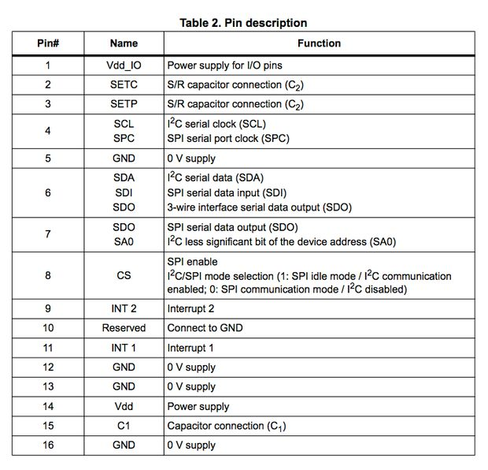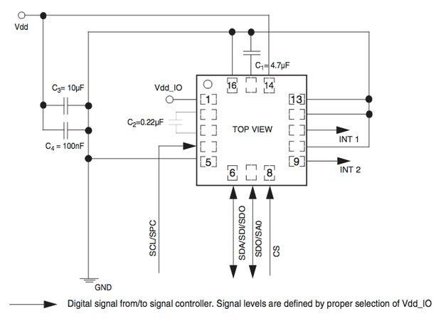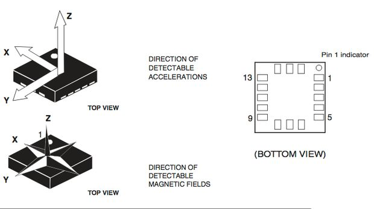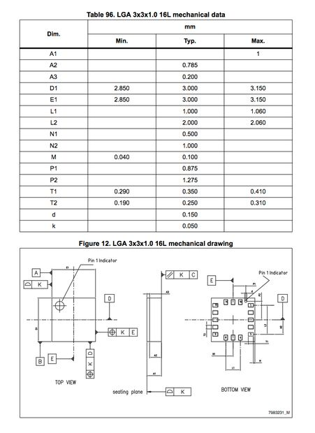The LSM303 is a 3 axis accelerometer/magnetometer that costs only $3-4 in quantities of 1.
I got the diagrams above from the datasheet of the LSM303. I used the mechanical drawings and pin layout to create a custom component in Eagle for this part. Each connection on the LSM303 has a 0.25mm pad with 0.25mm spacing in a 16 pin, 3mm package. I followed these instructions to create the component and added it to amanda.lbr. You can install amanda.lbr into your eagle environment using these directions.
One note from the datasheet I kept in mind while routing my board:
"High current in wiring and printed circuit traces can be the cause of errors in magnetic field measurements for compassing. Conductor-generated magnetic fields add to the Earth’s magnetic field creating errors in compass heading computations. Keep currents higher than 10 mA a few millimeters further away from the sensor IC."
ITG-3200
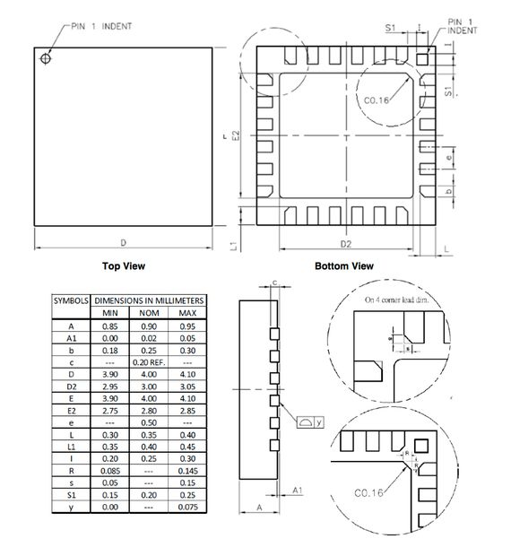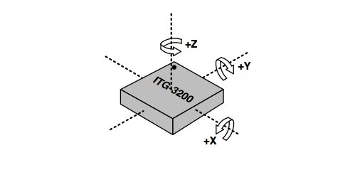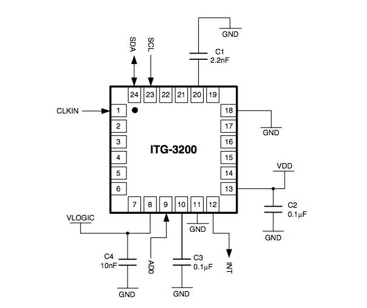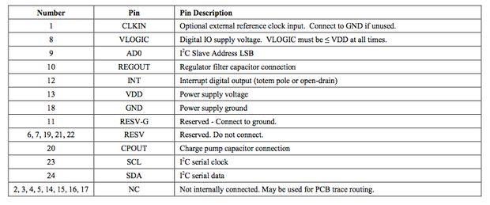The ITG-3200 is a 3 axis gyroscope that costs about $4-5 in quantities of 1, the same gyro used on the Sparkfun board.
I modified the ITG-3200 from the Sparkfun Eagle library to have slightly smaller pads that can be routed with a 10mil end mill and added it to amanda.lbr. The ITG-3200 has the same 0.5mm pitch that the LSM303 has. The sample wiring diagram for the chip is shown above (from the datasheet).
An important note from the datasheet:
"The exposed die pad is not required for heat sinking, and should not be soldered to the PCB since soldering to it contributes to performance changes due to package thermo - mechanical stress."
Schematics and Board Layout in Eagle
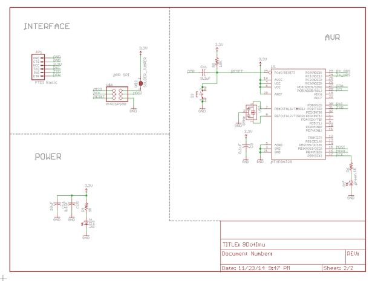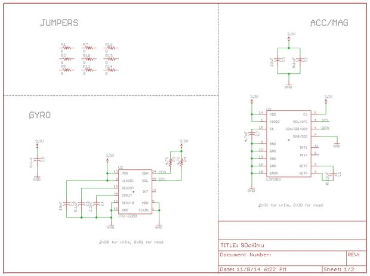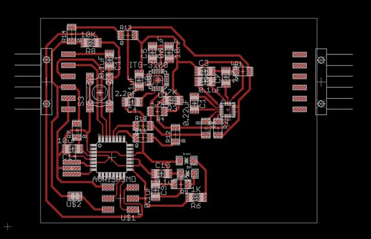I reworked the schematics provided from Sparkfun for their board to use the new accelerometer/magnetometer chip and changed all the resistor/capacitor sizes to more human-friendly 1206 packages. I used a few 0Ohm resistor jumpers to route the circuit in one layer. All my eagle files are included in the github repository.
You can see that there is an extra set of pin connections on the right side of the board that is not connected to the rest of the circuit. I added this to more easily mount my board on my particular project. You could omit these if you want.
Mill PCB
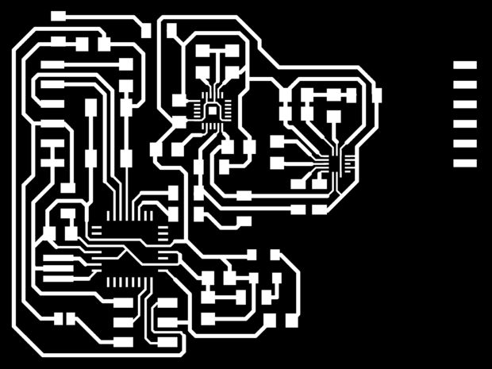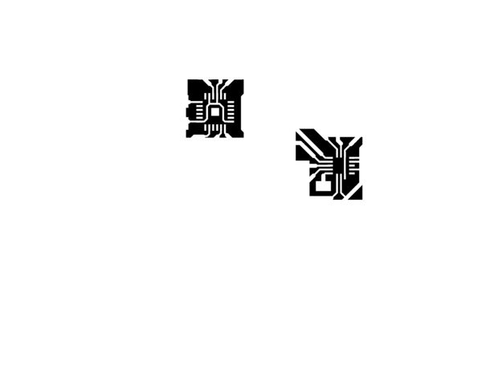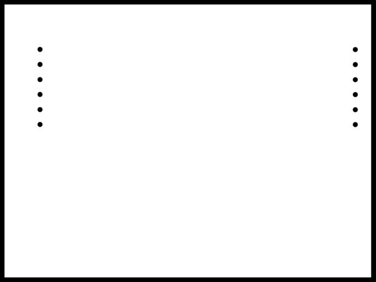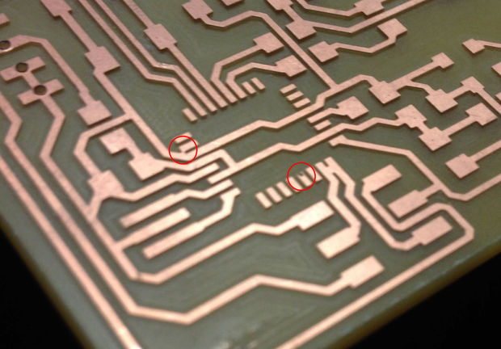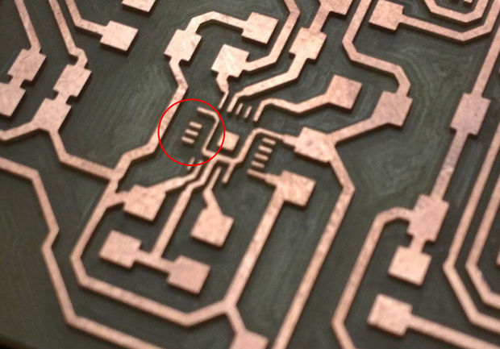I exported the board layout top layer from eagle as a black and white png at 2400 dpi. I created an image of the very small details on the board, so that I could do an extra pass of just these areas with a tiny end mill. I also created an outline layer that will allow me to cut out the border of the board and drill holes for the through hole connections. You could choose to omit those holes if you wanted to use surface mount headers. I've attached all the pngs and the photoshop document above (most recent stuff is on github).
To create my tool paths, I ran the files through the online fab modules with input format png, output format Roland MDX-20, and process mill PCB traces. I wanted to clear all the unwanted copper from my board and I had a lot of surface to cover so I put a 1/32" end mill in the Roland and changed the diameter of the tool to 0.79mm. I also set the number of offsets to -1 to completely fill the board with paths. The resulting path looked like this:

I saved the file as 9Dof32RoughCut.rml (attached).
Next I went in with a 1/64" end mill and milled out more details. This time I set the tool diameter to 0.39mm and the number of offsets to 1. Here is the resulting path:
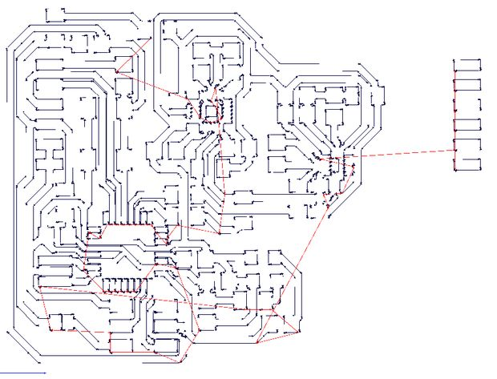
I saved the file as 9Dof64FinishCut.rml (attached).
Next I used a 10mil end mill to get the last bit of detail This time uploaded the details.png to the fab modules, set diameter to 0.25mm and num offsets to 1, and set the speed to 2mm/s. Here is the path:
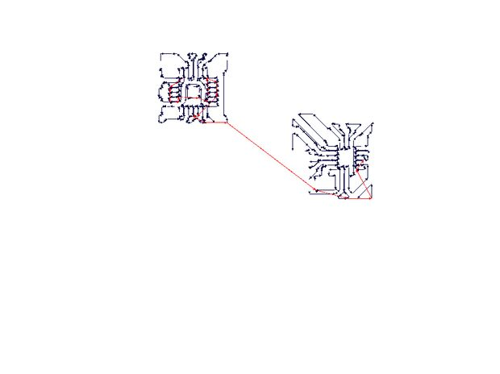
I saved this as 9DofFinish10milPass.rml (attached).
Finally I cut out the board and drilled holes for the FTDI header pins using a 1/32" end mill. I loaded the outline.png file into the fab modules and selected PCB outline under process. Here is what the path looks like:
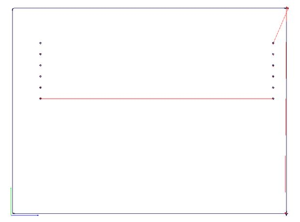
and the Modela file is called 9Dof32Outline.rml (attached).
My finished board is shown above, it turned out great. There were some minor issues of course: there was one short circuit left over after milling that I had to remove with a razor blade, and a few of the orphaned leads to my Gyro chip popped off during milling - this shouldn't be too much of an issue. I also accidentally dug into one of my traces because I started a finishing path with the wrong x/y offset - be sure to double check these each time you run the Modela. (see images above)
Tips:
I'd definitely recommend taking your time when stepping down to very small end mills for the milling portion of this project. Try to get as much material out with the bigger bits if possible. Also make sure your bed is flat and the z-zero is set correctly across the entire dimensions of your cut. I broke a 10mil end mill on my first attempt with this board because one side was sticking up a lot in the z direction, so the end mill was digging deep into the material. I replaced the spoil board and thoroughly cleaned all the tape residue off the Modela with alcohol. I broke a second 10mil bit because I left the speed of the path at 4mm/s and tried to mill through the entire 0.1mm in one pass. Once I slowed things down I was able to get the whole job done without breaking anything (though it did take about 1.5hrs to get through all the milling for this board).
9Dof32Outline.rml
9Dof32RoughCut.rml
9Dof64FinishCut.rml
9DofFinish10milPass.rml
9DofEagle.psd
Populate PCB
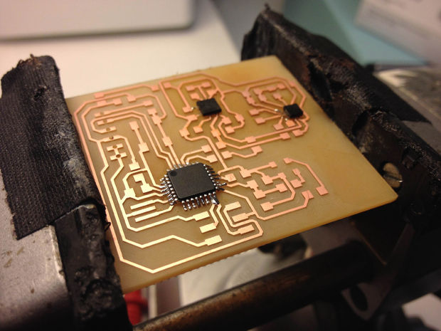Attaching these tiny chips onto the board is tricky, I tried a few techniques before I landed on something that worked.
First I tried solder paste. Generally, solder paste seems like a good idea with surface mount components. On my first try I laid down a line of solder paste over the tiny 0.5mm pitch leads, stuck the components down, and used a heat gun to set everything. I think this technique might work well on a professionally fabricated board, where the traces rest flush with the surface of the board. My milled board had grooves between each of the traces, and the solder paste tended to get stuck in these grooves instead of wicking toward the traces. I also had a harder time controlling the amount of solder paste on my leads, and with this type of thing, you want to use as little solder as possible.
Next I laser cut an alignment mask using mask.pdf (attached) - I thought this would help me with lining everything up for soldering. In the end, the mask didn't get me any more precision than placing the components by hand.
Here is the technique that worked for me:
First I applied a tiny bit of solder to the pads of my board - try to use as little as possible, just cover the pads with solder. Also be careful not to get any solder on the traces running under the gyro (it said in the data sheet that soldering to the underside of the chip would put mechanical strain on the device that would affect gyro readout). Then I clamped my board in a vice and slowly brought it up to temperature with the heat gun. Then, as I saw the solder begin to melt (get shiny) I slowly brought down each chip, held the heat on it for a little bit, and placed it onto the pads. I used a pair of tweezers to gently nudge the chip until it fell into alignment (this took a few tries, just keep reheating with the heat gun and applying flux until you get the alignment right).
Note - the Gyro chip should be attached with pin 1 on the bottom right corner
Here is a nice video showing approximately the same process (but do not put solder on the center pad of the gyro!):
Once everything was cool, I unclamped the vice and checked to see if my chips were soldered down. Then I checked every lead with a multimeter, looking for short circuits between adjacent pins. Double check that ground and Vcc are not connected.
Once I felt pretty sure the first two chips were down, I attached the rest of my components. I had to sub in a few through hole resistors and capacitors on my board because I couldn't find the correct surface mount components. Do not connect the solder jumper attached to the ISP header unless you are sure you want to do that. This will allow you to power your board from a 3.3V ISP programmer, but if you have a 5V ISP programmer, you will fry your chips.
Again, double check that ground and Vcc are not connected before proceeding.
mask.pdf
mask.ai
Burn Bootloader
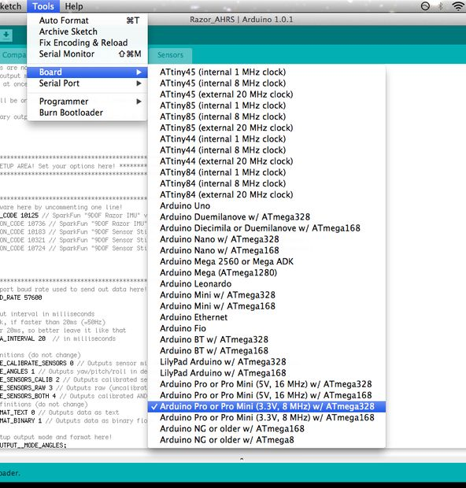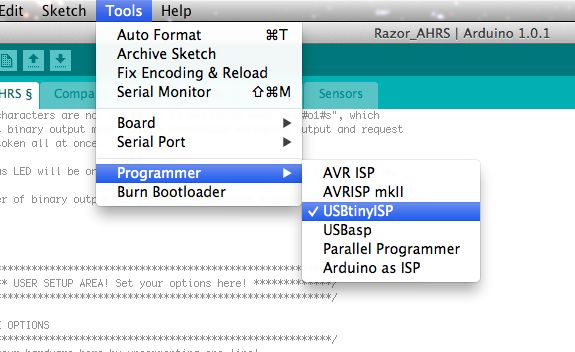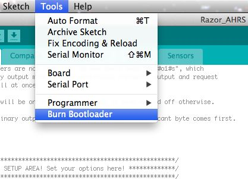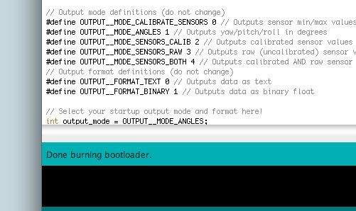Power up the board using the 3.3V FTDI connector. You should see the red LED light up. If you do not see the red LED light up then you may have a problem with your 3.3V and ground connections - use a multimeter to debug this.
In order to program the board and send serial data over the FTDI connection, you'll have to burn the Arduino bootloader on the Atmega328 chip via the ISP headers.
Plug in the ISP programmer to your board (you will also need the FTDI connected for power).
Open Arduino (I'm using Arduino 1.0.1)
Under Tools>>Board select Arduino Pro or Pro Mini (3.3V, 8MHz) w/ Atmega328
Under Tools>>Programmer select your current configuration (I'm using USBTinyISP, if you are using an Arduino as an ISP programmer you will want to select Arduino as ISP)
Select Tool>>Burn Bootloader. The green LED should flash while this is happening. Eventually you will see a message that says "Done burning bootloader" and the green LED will flash about once per second.
Test Atmega

If you were able to complete the last step, your Atmega board is probably working fine. Just to be sure, run this simple sketch:
int led = 13;
void setup() {
pinMode(led, OUTPUT);
}
void loop() {
digitalWrite(led, HIGH);
delay(100);
digitalWrite(led, LOW);
delay(100);
}Connect the FTDI cable to your board (you will not need the ISP programmer for the rest of this project).
Under Tools>>Board select Arduino Pro or Pro Mini (3.3V, 8MHz) w/ Atmega328
Hit File>>Upload to upload the sketch
You should see the green led blink at a rate of 10Hz (10 times per second). If all this is working so far, continue to the next step, if not, double check your connections with a multimeter.
In my first attempt, I had some problems with maintaining a Serial connection to my board. To be sure you're not having this problem upload the following:
Talk to your hardware via I2C
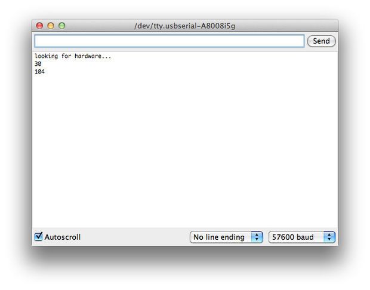Run the following sketch to start talking to your gyro and acc/mag:
#include <Wire.h>
void setup(){
Serial.begin(57600);
Serial.println("looking for hardware...");
delay(200);
for (int address=1; address <= 126; address++) {
Wire.beginTransmission(address); // Select address
if (!Wire.endTransmission()) Serial.println(address);
}
}
void loop(){
}This sketch should print out all I2C addresses on the hardware on the board. Open the Serial Monitor to see the output (Tools>Serial Monitor), be sure to set the baud rate to 57600 in the lower right corner of the Serial Monitor. The output from my board is shown above.
The accelerometer/magnetometer board is at address 30 and the gyro is at address 104.
If you don't see anything printed, or if you see strange characters printed, be sure that your baud rate is set to 57600 (lower right hand corner of the Serial Monitor, in a dropdown menu). If you see "looking for hardware..." and nothing else, the Atmega is not able to connect to your chips, check all the connections again with a multimeter. You may need to reflow the connections to your chip with a heat gun (that did the trick for me).
Talk to Gyroscope with I2C
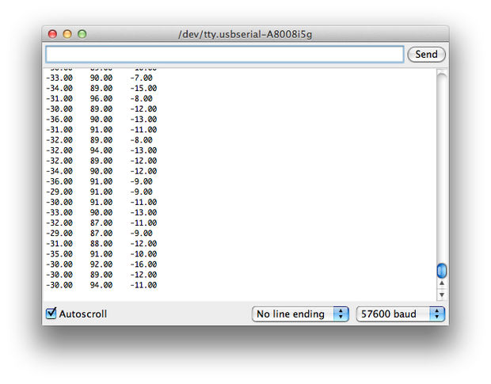The following code should print out the X, Y and Z raw gyro data to the Serial Monitor. The output for my board is shown above.
#include <Wire.h>
#define GYRO_ADDRESS ((int) 0x68) // 0x68 = 0xD0 / 2
#define OUTPUT__BAUD_RATE 57600
#define STATUS_LED_PIN 13 // Pin number of status LED
// Arduino backward compatibility macros
#if ARDUINO >= 100
#define WIRE_SEND(b) Wire.write((byte) b)
#define WIRE_RECEIVE() Wire.read()
#else
#define WIRE_SEND(b) Wire.send(b)
#define WIRE_RECEIVE() Wire.receive()
#endif
float gyro[3];
int num_gyro_errors = 0;
boolean output_errors = false;
void setup()
{
Wire.begin(); // join i2c bus (address optional for master)
Serial.begin(OUTPUT__BAUD_RATE); // start serial for output
// Init status LED
pinMode (STATUS_LED_PIN, OUTPUT);
digitalWrite(STATUS_LED_PIN, LOW);
// Init sensors
delay(50); // Give sensors enough time to start
Gyro_Init();
// Read sensors, init DCM algorithm
delay(20); // Give sensors enough time to collect data
}
void Gyro_Init()
{
// Power up reset defaults
Wire.beginTransmission(GYRO_ADDRESS);
WIRE_SEND(0x3E);
WIRE_SEND(0x80);
Wire.endTransmission();
delay(5);
// Select full-scale range of the gyro sensors
// Set LP filter bandwidth to 42Hz
Wire.beginTransmission(GYRO_ADDRESS);
WIRE_SEND(0x16);
WIRE_SEND(0x1B); // DLPF_CFG = 3, FS_SEL = 3
Wire.endTransmission();
delay(5);
// Set sample rato to 50Hz
Wire.beginTransmission(GYRO_ADDRESS);
WIRE_SEND(0x15);
WIRE_SEND(0x0A); // SMPLRT_DIV = 10 (50Hz)
Wire.endTransmission();
delay(5);
// Set clock to PLL with z gyro reference
Wire.beginTransmission(GYRO_ADDRESS);
WIRE_SEND(0x3E);
WIRE_SEND(0x00);
Wire.endTransmission();
delay(5);
}
// Reads x, y and z gyroscope registers
void Read_Gyro()
{
int i = 0;
byte buff[6];
Wire.beginTransmission(GYRO_ADDRESS);
WIRE_SEND(0x1D); // Sends address to read from
Wire.endTransmission();
Wire.beginTransmission(GYRO_ADDRESS);
Wire.requestFrom(GYRO_ADDRESS, 6); // Request 6 bytes
while(Wire.available()) // ((Wire.available())&&(i<6))
{
buff[i] = WIRE_RECEIVE(); // Read one byte
i++;
}
Wire.endTransmission();
if (i == 6) // All bytes received?
{
gyro[0] = -1 * ((((int) buff[2]) << 8) | buff[3]); // X axis (internal sensor -y axis)
gyro[1] = -1 * ((((int) buff[0]) << 8) | buff[1]); // Y axis (internal sensor -x axis)
gyro[2] = -1 * ((((int) buff[4]) << 8) | buff[5]); // Z axis (internal sensor -z axis)
}
else
{
num_gyro_errors++;
if (output_errors) Serial.println("!ERR: reading gyroscope");
}
}
void loop() {
delay(200);
Read_Gyro();
Serial.print(gyro[0]);
Serial.print(" ");
Serial.print(gyro[1]);
Serial.print(" ");
Serial.println(gyro[2]);
}Talk to Accelerometer/Magnetometer with I2C
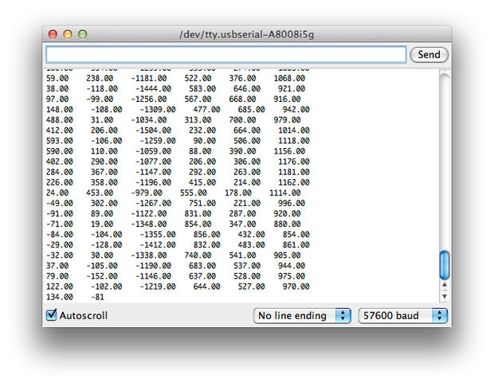The following code prints raw acceleration and magnetic data for X, Y, and Z axis (first three numbers are X, Y, Z acceleration, last three are X, Y Z magnetic field). the output from my board is shown above.
#include <Wire.h>
#define ACC_MAG_ADDRESS ((int) 0x1E) // 0x1E = 0x3C / 2
#define OUTPUT__BAUD_RATE 57600
#define STATUS_LED_PIN 13 // Pin number of status LED
// Arduino backward compatibility macros
#if ARDUINO >= 100
#define WIRE_SEND(b) Wire.write((byte) b)
#define WIRE_RECEIVE() Wire.read()
#else
#define WIRE_SEND(b) Wire.send(b)
#define WIRE_RECEIVE() Wire.receive()
#endif
float acc[3];
float mag[3];
int num_mag_errors = 0;
int num_acc_errors = 0;
boolean output_errors = false;
void setup()
{
Wire.begin(); // join i2c bus (address optional for master)
Serial.begin(OUTPUT__BAUD_RATE); // start serial for output
// Init status LED
pinMode (STATUS_LED_PIN, OUTPUT);
digitalWrite(STATUS_LED_PIN, LOW);
// Init sensors
delay(50); // Give sensors enough time to start
Acc_Mag_Init();
// Read sensors, init DCM algorithm
delay(20); // Give sensors enough time to collect data
}
void Acc_Mag_Init()
{
//set acceleration data rate to 50Hz, enable all acc axes
Wire.beginTransmission(ACC_MAG_ADDRESS);
WIRE_SEND(0x20);//CTRL1 register
WIRE_SEND(0x57);//01010111
Wire.endTransmission();
delay(5);
//set acceleration scale +/-16G
Wire.beginTransmission(ACC_MAG_ADDRESS);
WIRE_SEND(0x21);//CTRL2 register
WIRE_SEND(0x20);//0010000
Wire.endTransmission();
delay(5);
//set magnetic resolution to high and data rate to 50Hz
Wire.beginTransmission(ACC_MAG_ADDRESS);
WIRE_SEND(0x24);//CTRL5 register
WIRE_SEND(0x70);//01110000
Wire.endTransmission();
delay(5);
//set magnetic scale to +/-8 Gauss
Wire.beginTransmission(ACC_MAG_ADDRESS);
WIRE_SEND(0x25);//CTRL6 register
WIRE_SEND(0x40);//01000000
Wire.endTransmission();
delay(5);
//set magnetometer to continuous mode
Wire.beginTransmission(ACC_MAG_ADDRESS);
WIRE_SEND(0x26);//CTRL7 register
WIRE_SEND(0x00);//
Wire.endTransmission();
delay(5);
}
// Reads x, y and z acc/mag registers
void Read_Mag()
{
int i = 0;
byte buff[6];
Wire.beginTransmission(ACC_MAG_ADDRESS);
WIRE_SEND(0x08 | 0x80); // Sends address to read from
Wire.endTransmission();
Wire.beginTransmission(ACC_MAG_ADDRESS);
Wire.requestFrom(ACC_MAG_ADDRESS, 6); // Request 6 bytes
while(Wire.available()) // ((Wire.available())&&(i<6))
{
buff[i] = WIRE_RECEIVE(); // Read one byte
i++;
}
Wire.endTransmission();
if (i == 6) // All bytes received?
{
mag[0] = -1 * ((((int) buff[1]) << 8) | buff[0]); // X axis
mag[1] = -1 * ((((int) buff[3]) << 8) | buff[2]); // Y axis
mag[2] = -1 * ((((int) buff[5]) << 8) | buff[4]); // Z axis
}
else
{
num_mag_errors++;
if (output_errors) Serial.println("!ERR: reading acc/mag");
}
}
void Read_Acc(){
int i = 0;
byte buff[6];
Wire.beginTransmission(ACC_MAG_ADDRESS);
WIRE_SEND(0x28 | 0x80); // Sends address to read from
Wire.endTransmission();
Wire.beginTransmission(ACC_MAG_ADDRESS);
Wire.requestFrom(ACC_MAG_ADDRESS, 6); // Request 6 bytes
while(Wire.available()) // ((Wire.available())&&(i<6))
{
buff[i] = WIRE_RECEIVE(); // Read one byte
i++;
}
Wire.endTransmission();
if (i == 6) // All bytes received?
{
acc[0] = -1 * ((((int) buff[1]) << 8) | buff[0]); // X axis
acc[1] = -1 * ((((int) buff[3]) << 8) | buff[2]); // Y axis
acc[2] = -1 * ((((int) buff[5]) << 8) | buff[4]); // Z axis
}
else
{
num_acc_errors++;
if (output_errors) Serial.println("!ERR: reading acc/mag");
}
}
void loop() {
delay(100);
Read_Mag();
Read_Acc();
Serial.print(acc[0]);
Serial.print(" ");
Serial.print(acc[1]);
Serial.print(" ");
Serial.print(acc[2]);
Serial.print(" ");
Serial.print(mag[0]);
Serial.print(" ");
Serial.print(mag[1]);
Serial.print(" ");
Serial.println(mag[2]);
}9 DOF Firmware and Calibration
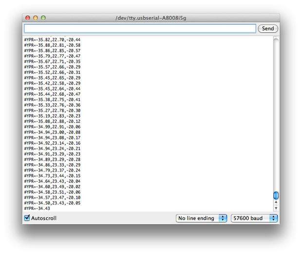
The final code for the board can be found on github (click the cloud-shaped button to download). Most of this was written by Peter Bartz for the Sparkfun IMU, I've just modified this to work with the LSM303. Open the file Arduino>>Razor_AHRS>>Razon_AHRS.ino and upload it to the board. This code takes the raw data from all the sensors, filters it, and combines it to calculate pitch, yaw, and roll. Click on the Serial Monitor to see the uncalibrated pitch, yaw, and roll (my boards output shown above).
Calibration is really important if you want this board to function optimally. Here is my uncalibrated board hooked up to a Processing sketch:
And here it is after calibration (calibration didn't make a huge difference for me, but it may for you):
The remaining calibration steps can be found on Peter Bartz tutorial here.